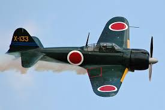
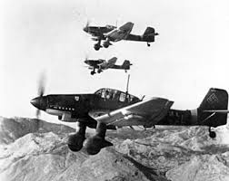
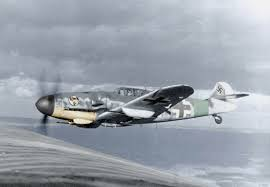

Kobe Bryant

INTRODUCCIÓN
Kobe Bean Bryant (Filadelfia, Pensilvania, 23 de agosto de 1978-Calabasas, California, 26 de enero de 2020)[5] fue un baloncestista estadounidense que jugaba en la posición de escolta. Disputó veinte temporadas en la NBA, todas ellas en Los Angeles Lakers. Hijo del exjugador de baloncesto Joe Bryant,[6] está considerado como uno de los mejores baloncestistas de todos los tiempos. Ganó cinco campeonatos de la NBA con los Lakers y dos medallas de oro olímpicas con la selección estadounidense, fue dieciocho veces All-Star, quince veces All-NBA (once de ellas en el primer quinteto), doce veces miembro de los mejores quintetos defensivos, MVP de la Temporada en 2008,[7] MVP de las Finales en 2009 y 2010[8] y máximo anotador de la liga en 2006 y 2007.[9][10] En 2020 fue incluido de manera póstuma en el Salón de la Fama del Baloncesto.[11]
Historia
Bryant dio el salto a la NBA directamente desde el instituto Lower Merion de Filadelfia en 1996, año en el que fue seleccionado por los Charlotte Hornets en el Draft,[12] pero fue traspasado inmediatamente a los Lakers. Junto con Shaquille O'Neal, llevó a su equipo a la consecución de tres títulos consecutivos de la NBA entre 2000 y 2002.[13] Tras la salida de O'Neal en 2004, Bryant se convirtió en la estrella en solitario del equipo angelino y entre 2005 y 2007 logró varias plusmarcas de anotación. Después de perder las Finales en 2008, llevó a los Lakers a la obtención de dos campeonatos consecutivos en 2009 y 2010. Las lesiones lastraron sus últimos años de carrera y se retiró al término de la temporada 2015-16. El 18 de diciembre de 2017 sus camisetas con los dorsales 8 y 24 fueron retiradas por los Lakers, siendo la primera vez en la historia de la NBA que un equipo retira dos números distintos a un mismo jugador.[16] Ese mismo día se presentó su corto «Dear Basketball»,[17] dirigido por Glen Keane, y en el que narró, en imágenes, la carta que escribió en The Players' Tribune anunciando su retirada.[18] Dicho corto ganó un Óscar en la categoría mejor corto de animación.[19][20] Falleció el 26 de enero de 2020 a los 41 años de edad en un accidente de helicóptero en la localidad californiana de Calabasas junto a otras ocho personas (incluido el piloto), y entre quienes se encontraba su hija Gianna Maria de trece años.[21]
Universidad
Hacia 1935, el Ministerio del Aire había observado suficientes avances en la industria aeronáutica como para probar de nuevo el diseño de un monoplano. Finalmente rechazaron el nuevo diseño de Supermarine porque no podía llevar el armamento compuesto por ocho ametralladoras y parecía no tener espacio para que pudiese hacerlo.
| |
 |
|
 |
 |
|